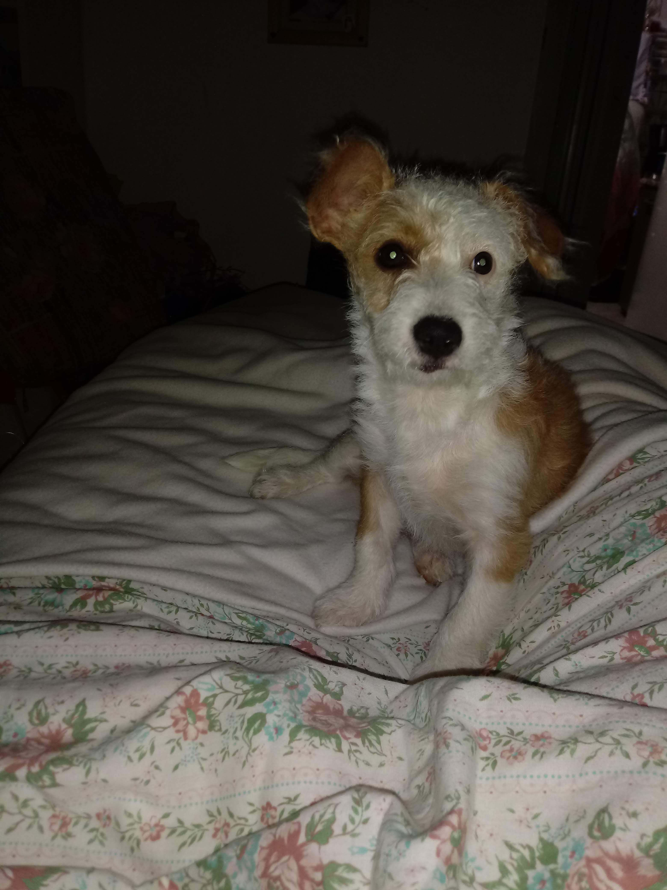
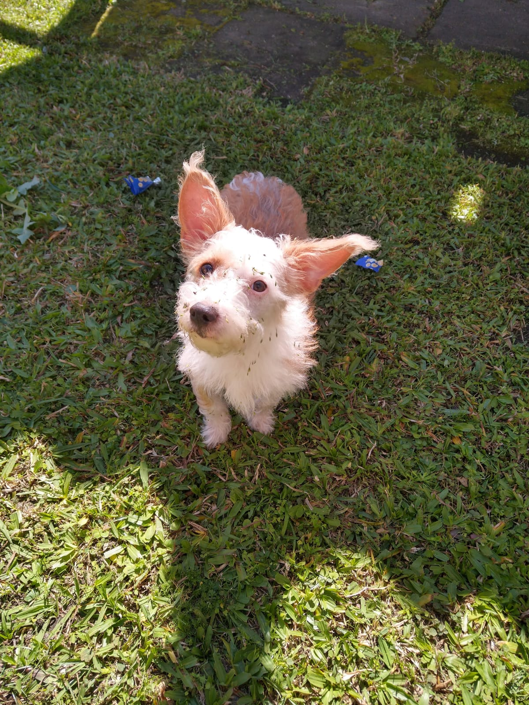

Juliete
Juju chegou para se juntar a equipe canina através de um post no Facebook do mesmo jeito da Eva -nossa outra cadelinha- mas dessa vez quem viu a postagem e se apaixonou foi a minha mãe.
Arteira que dói na alma, adora revirar o lixo e brincar com gatos -inclusive era a melhor amiga do Mecz-, Juliete é uma cadelinha animada e cheia de vida, adora um colo e é mega mimada por todos.
Ficou mais próxima das outras meninas após o falecimento do gato e vive encardida por gostar de brincar na terra, além de fazer muuuita bagunça.

- 
- 